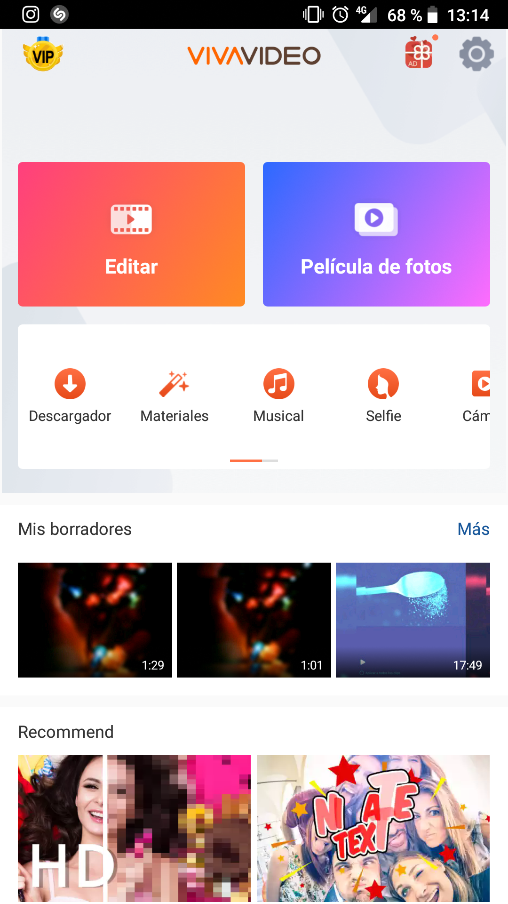
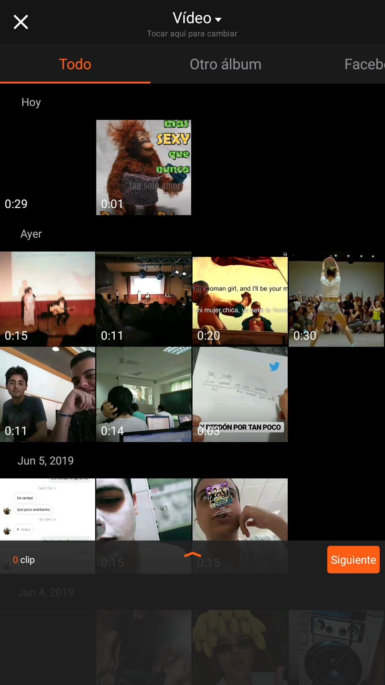
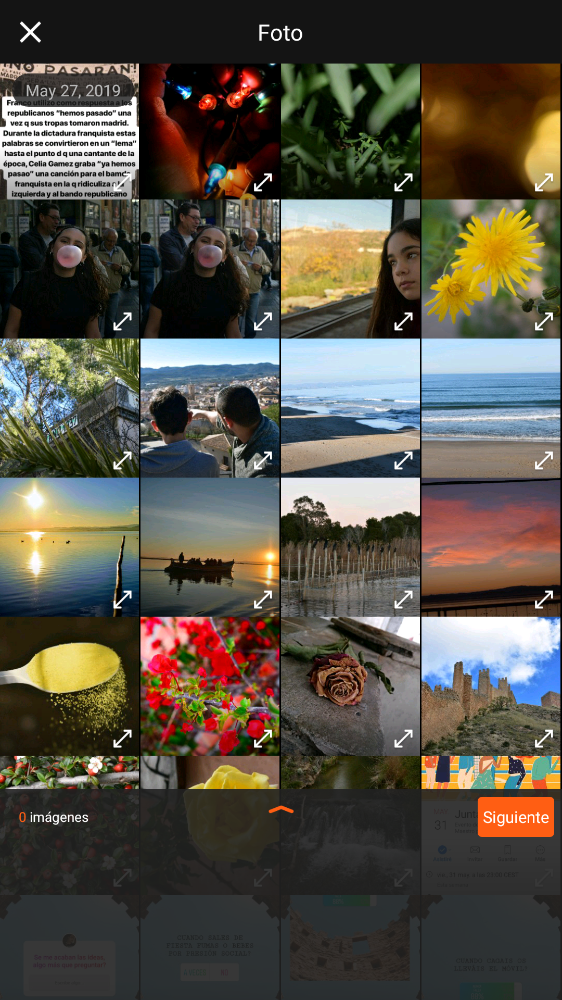
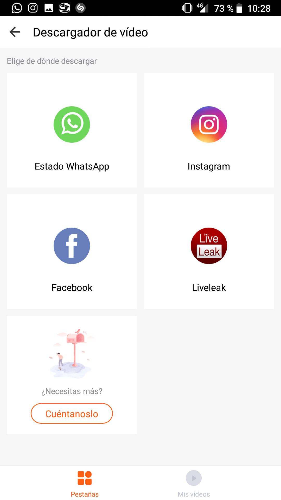
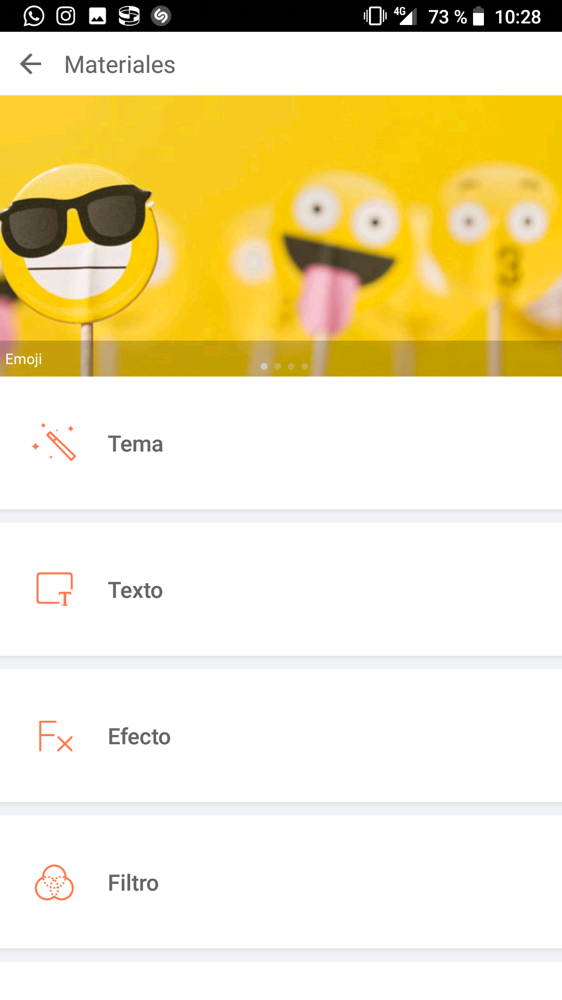
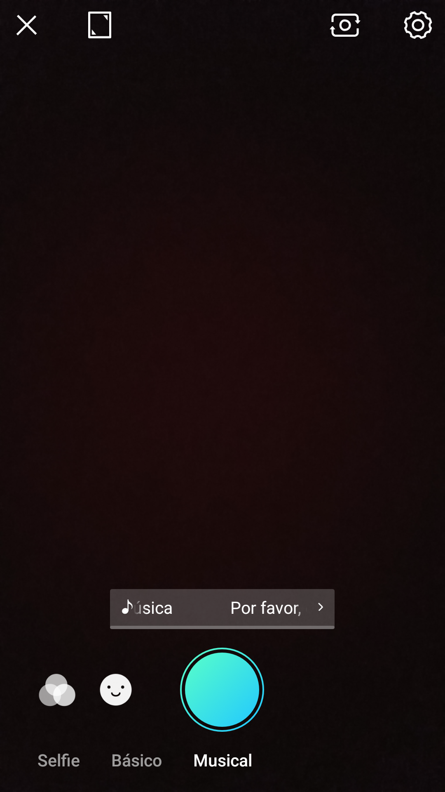
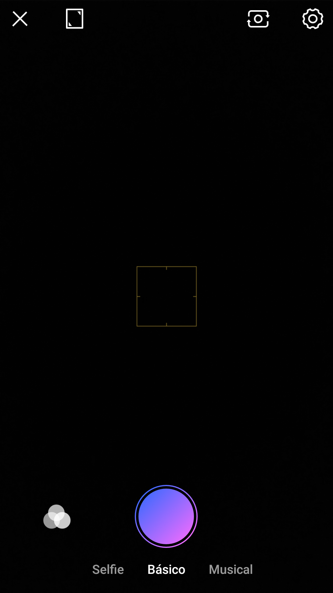
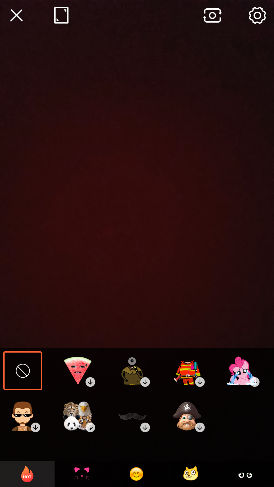
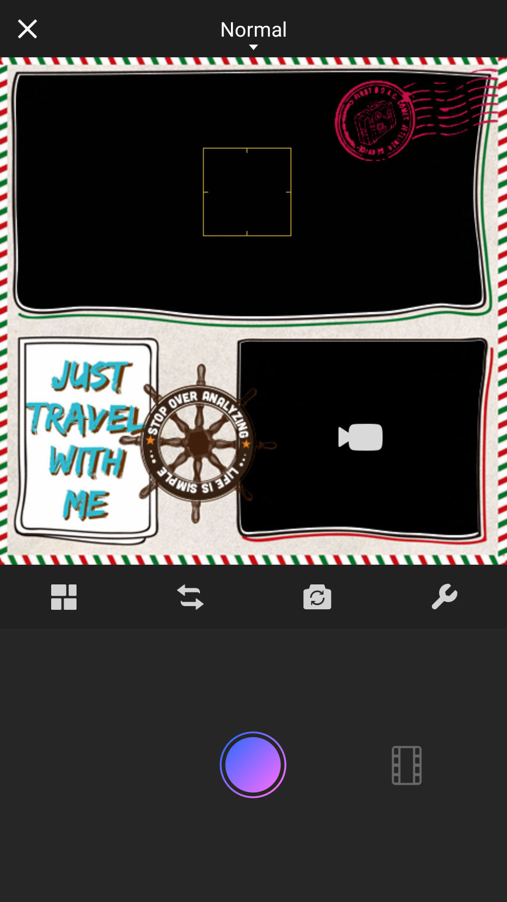

EDITAR: Esta es una de las dos opciones principales que tiene la aplicación. nos permite editar un video, desde añadirle musica hasta ajustar el brillo, etc (VIP)

PELÍCULA DE FOTOS: Esta es la segunda opción principal que nos trae la aplicación, este nos dejará crear nuestro propio video a partir de las fotos que nosotros elijamos (a partir de las 30 imagenes te avisa de que el tiempo de exportación aumentará) y podremos decidir que velocidad queremos que lleve el video, podremos añadirle musica, elegir el orden de las fotos, y todo desde una interfaz bastante intuitiva.

DESCARGADOR: Esta opción la tenemos justamente abajo de las anteriores y nos permitirá descargar los videos que queramos de los estados de whatsapp

MATERIALES: Aquí nos permite descargarnos todo el contenido gratuito disponible. Está ordenado de manera que te sea más sencillo encontrar aquello que buscas.

MUSICAL: en este apartado nos permite grabar un vídeo con la música que nosotros queramos, puede ser música que viene por defecto en la app o música que tengas descargada

SELFIE:con esta opción puedes hacerte un selfie, se abre directamente la cámara frontal y te da la opción de añadir filtros en el momento para ver como quedaría.

CÁMARA: la opción de la cámara de toda la vida, con 5 todas sus funciones completas, también puedes elegir el formato que quieres que tenga la pantalla

PIP-FILM: Aquí nos están dando la opción de poner una especie de cuadro decorativo a nuestras fotos para darle un toque más animado.
